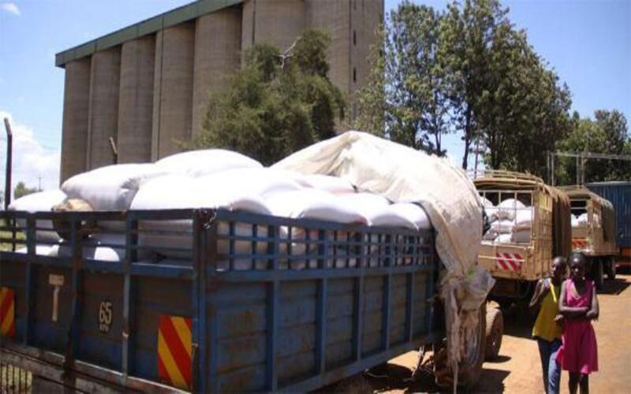

Grain is dried by spreading the harvest on the ground in the sun which is tedious and wasteful.
Storage is in sacks and traditional granaries. There is an alternative to rent storage at government silos which can be too expensive for farmers because of transport costs, loading and unloading labour and the cost of renting space in the silo can be unaffordable to most farmers. Farmers can queue for days before they get a chance to offload their produce at the silos.